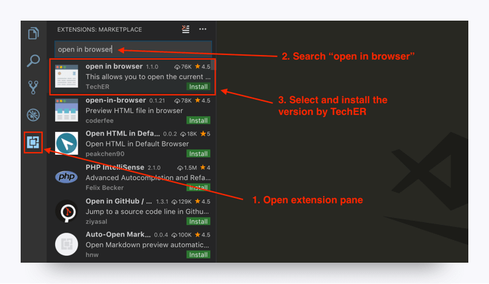
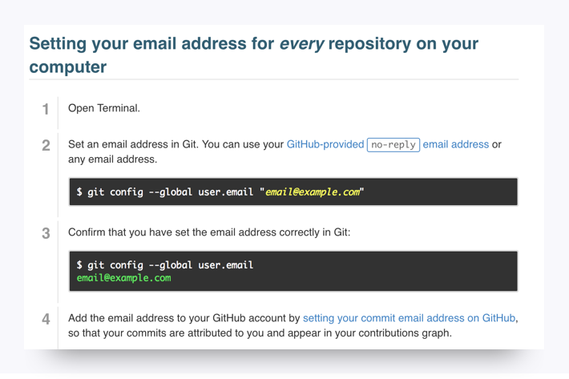

Get Your Tools Installed (Mac)
You will be installing the required tools and software for the course. There's a lot to get through, so buckle in and get ready!
Before You Begin
First, create accounts for the following services, which you'll need throughout the course. Don't just create logins; job recruiters often scour these sites in search of job candidates, so be sure to provide at least a headshot and contact information.
Note: You should create a full profile highlighting your skills and work experience, and include a headshot.
In addition, be sure to accept the invite for your section on Slack. You will receive the link to your class-specific channel during orientation. If you don't receive this email, contact your Student Success Manager for assistance.
Tool and Software Installations
Follow the instructions below to complete the installation process for all of the required tools.
Google Chrome
1. If you don’t already have Chrome installed, visit the download page here.
2. Download, open, and run the installation file.
Screencastify
Note: You must be using Google Chrome in order to install and use Screencastify.
1. Open Google Chrome.
2. Go to the Chrome Web Store and type Screencastify in the Search Extensions bar in the top left of the page. Note: You can also start by going to the Screencastify website and clicking the Add to Chrome button, which will take you directly to its listing in the Chrome Web Store.
3. Click the Add to Chrome button.
4. Click Add extension.
5. When the download is complete, click the gray film strip icon in the top-right corner of your browser screen to launch Screencastify.

Allow Webcam and Microphone Access
The first time you click on the Screencastify icon, you'll be asked to give Screencastify permission to access your webcam and microphone, which enables you to narrate over your recordings as well as record your webcam. You are required to allow access in order for the Screencastify extension to function properly. You do not need to include audio or video in your recordings, and Screencastify never records audio or video unless you expressly ask it to.
1. Click the Setup Camera Access button.
2. Click Allow in the pop-up window.
Note: If Screencastify is unable to detect your microphone, click here. If it's unable to detect your webcam, click here.
Connect Your Google Drive to Screencastify
It is recommended that you save all of your Screencastify recordings to Google Drive, which is safer than storing them locally on your computer. By connecting your Google Drive to Screencastify, your recordings will be saved there automatically. The length of this process depends on how long a particular recording is. Note: Screencastify never views, modifies, stores, or in any way interacts with the other files in your Google Drive.
The first time you open the Screencastify extension, you'll be asked where you want to store your recordings (right after you allow webcam and microphone access). Follow these steps:
1. Confirm that Google Drive is selected, and then click Next.
2. Sign in to your Google account. Note: You can sign in with any Google-based account, not just an @gmail.com address.
3. Allow Screencastify permission to access your Google Drive.
And that's all you need to do! As soon as you finish your first recording, a new folder named Screencastify will be created in your Drive. All of your recordings will be saved in this folder.
The videos you will see in Your Recordings library in Screencastify are synced with this Screencastify folder in your Drive. This means:
- If you delete a video in Screencastify, it will also be deleted from your Drive.
- If you move a video out of the Screencastify folder in your Drive, it will no longer be accessible from Your Recordings in Screencastify.
- If you rename a video in Screencastify, it will also be renamed in your Drive.
You can always change the default storage location for your recordings, even after initial setup. Simply open the extension menu and click Options. The first thing you'll see is an option to select where you want to store your recordings.
Want to know how to record, save to your Google Drive and share your recordings? Check it out here!
Slack
1. Search for Slack in the App Store. Click Get under the app name and icon, and then click Install.
2. Open the Finder window, select the Applications folder from the sidebar, and then find and double-click the Slack icon to launch the program.
3. To keep Slack in your dock, right-click the Slack icon, click Options, and then click Keep in Dock.
4. Add our channel to the application and then click Join Now. You will receive the link to your class-specific channel during orientation.
5. Enter your full name and optional display name, create a password, and then click Next.
6. Click your workspace name in the top left to open the menu.
7. Select Sign in to another team.
8. Enter your team’s Slack domain that you received during orientation. Click Continue.
9. Enter your email address (the one we used to invite you) and password to sign in. When you see the chatroom, you're finished.
VS Code
1. Go to the setup page on the VS Code website and select Mac as your platform.
2. Open your Downloads folder and click on the file to unzip.
3. Drag the file to your Applications folder.

You should now be able to access VS Code from your Applications folder.

Open in Browser (VS Code Extension)
1. Open VS Code.
2. Open the extensions pane and search for open in browser.
3. Select the version written by TechER and click Install.

Terminal
You’ll be entering your command line code through this interface. Since you’re on a Mac right now, you already have it! Just follow these steps to open the program.
Step 1. Press command + spacebar to open Spotlight Search.
Step 2. Type terminal into the search and then press Enter.
Step 3. Keep this window open; you’ll need it for the next steps.
Xcode
Step 1. Copy the following line, paste it into your Terminal window, and press Enter:
xcode-select --install
Step 2. A window will appear with the following message: “The xcode-select command requires the command line developer tools. Would you like to install the tools now?”. Select “Install.”
Step 3. Agree to the Terms of Service.
Note: If you get a message saying that you don't have permissions to run this, copy and paste the following code into your terminal and press Enter.
sudo xcode-select --install
You will then need to provide your computer's password to complete the installation.
Homebrew
Step 1. Go to Homebrew. Copy the script listed under Install Homebrew.
Step 2. Paste the script into your Terminal window. Press Enter.
SSH Keys
To complete these steps, you will need to sign up for a GitHub account if you haven't already.
It's recommended that you use the following walkthrough video alongside the steps outlined below to add GitHub SSH keys:
Step 1. Open Terminal.
Step 2. To make sure you don’t already have a set of keys on your computer, type the following in your Terminal window. (Note: Copying and pasting will not work!)
ls –al ~/.ssh
- If no keys pop up, move on to Step 3.
- If keys do pop up, check that none of them are listed under
id_rsa, like in this image:
Note: If you find a key with a matching name, you can either overwrite it by following the next steps, or you can use the same key referenced in Step 8. If you decide not to overwrite it, you will need to remember the password tied to your key.
Step 3. Enter the following command along with your email to generate your keys.
ssh-keygen –t rsa –b 4096 –C "YOURGITHUBEMAIL@PLACEHOLDER.NET"
Step 3a. (optional) If the command above causes an error, try the following command instead:
ssh-keygen -t rsa
Step 4. When prompted to enter a file to save the key, press Enter, and then enter a passphrase for your key. Note: You shouldn’t see any characters appear in the window while typing the password. When you’re finished, your window should look like this:
Step 5. Link your key to your machine using a tool called the ssh-agent. Run the following command to test whether the ssh-agent is running on your machine: eval "$(ssh-agent –s)". Your Terminal window should look like this:
Step 5a. (optional) If you're using macOS Sierra 10.12.2 or later, you need to modify your ~/.ssh/config file to the following:
Host *
AddKeysToAgent yes
UseKeychain yes
IdentityFile ~/.ssh/id_rsa
Step 6. Run the following command: ssh-add ~/.ssh/id_rsa.
Depending on your version of ssh-add you may need the -K option. If the command above returns an error, run the following command instead: ssh-add -K ~/.ssh/id_rsa
Step 7. When prompted, enter the passphrase associated with the key. Note: If you’ve forgotten this key, go back to Step 3.
Step 8. To add the key to GitHub, first copy the key to your clipboard by entering the following command:
pbcopy < ~/.ssh/id_rsa.pub.
You shouldn’t see any kind of message when you run this command. If you do, make sure you entered it correctly.
Note: Do not copy anything else to your clipboard until all steps are completed. Otherwise, you’ll need to enter the copy command again.
Step 9. Go to GitHub's SSH key settings. Click New SSH key.
Step 10. When the form pops up, enter a name for your computer in the Title input. In the Key input, paste the SSH key you copied in Step 8.
Step 11. To add GitHub to your computer’s list of acceptable SSH hosts, type the following command in your Terminal window: ssh –T git@github.com. - You should see an RSA fingerprint in your window. Enter yes only if it matches the one highlighted in the image below:
Setting Your Git Username for Every Repository on Your Computer
Git uses a username to associate commits with an identity. The Git username is not the same as your GitHub username.
You can change the name that is associated with your Git commits using the git config command. The new name you set will be visible in any future commits you push to GitHub from the command line. If you'd like to keep your real name private, you can use any text as your Git username.
Changing the name associated with your Git commits using git config will only affect future commits and will not change the name used for past commits.
Setting Your Email Address for Every Repository on Your Computer
GitHub uses the email address set in your local Git configuration to associate commits pushed from the command line with your GitHub account.
You can use the git config command to change the email address you associate with your Git commits. The new email address you set will be visible in any future commits you push to GitHub from the command line. Any commits you made prior to changing your commit email address are still associated with your previous email address.
For more information on commit email addresses, including your GitHub-provided noreply email address, see "About commit email addresses."

You're Done!
You did it! Take a moment to complete this quick check-in to see how you're feeling about installing your tools for the boot camp: